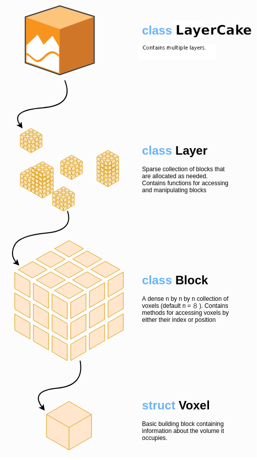

Technical Details#
This page gives some technical details about the operation of nvblox under the hood.
This page is a poor substitute for the scientific papers which describe the underpinnings of the methods we rely on. The most important papers to read in chronological order are:
KinectFusion [1] Describes TSDF mapping from depth images.
Real-time 3D reconstruction at scale using voxel hashing [2] Introduces voxel hashing (on the CPU) which is the map structure used by
nvblox.Voxblox [3] Introduces the use of a voxel-hashed TSDF map for robotics (on the CPU)
nvblox [4] Describes
nvblox, which combines the preceeding papers but moves the algorithms to the GPU.
Map Representation#
By default nvblox builds the reconstructed map in the form of a Truncated Signed
Distance Function (TSDF) stored in a 3D voxel grid. We also support occupancy
grids.
The TSDF approach is similar to 3D occupancy grid mapping approaches in which occupancy probabilities are stored at each voxel. In contrast however, TSDF-based approaches (like nvblox) store the (signed) distance to the closest surface at each voxel. The surface of the environment can then be extracted as the zero-level set of this voxelized function.
Typically TSDF-based reconstructions provide higher quality surface reconstructions. In addition, distance fields are also useful for path planning because they provide an immediate means of checking whether potential future robot positions are in collision. This fact, the utility of distance functions for both reconstruction and planning, motivates their use in nvblox (a reconstruction library for path planning).
Map Structure#
{kind=link}

We implement a hierarchical sparse voxel grid for storing data.
LayerCake: At the top level we have theLayerCake, which contains severalLayers, which are colocated voxel grids. EachLayer(voxel-grid) contains a different type of mapped quantity (eg TSDF and ESDF).Layer: ALayeris a sparse voxel grid that contains a single type of mapped quantity (eg TSDF). Inside aLayerwe have a sparse collection of(Voxel)Blocks.(Voxel)Blocks: A grid element in a layer. EachBlockblock defines the map in a small cubical region of space. With aBlockvoxels are densely allocated in an 8x8x8 grid.Voxels: The smallest unit of resolution. Holds a single value of the mapped quantity (eg the TSDF).
Details of how to interact with the map can be found in Core Library Interface (c++), and Voxels Access Example (python).
This hierarchy allows us several useful properties:
Sparsity: We only allocate memory for the voxels that are mapped. The map can grow and shrink dynamically as needed.
Data Locality: A
Blockis stored in a contiguous chunk of memory. Our GPU kernels are often implemented such that CUDA ThreadBlocks process singleVoxelBlocks. Within such kernels we benefit from coalesced access to global GPU memory.Extensibility: New mapped quantities can be added to the map by new
Layers. Users can define their ownLayersto map custom quantities alongside those built into thenvbloxlibrary.